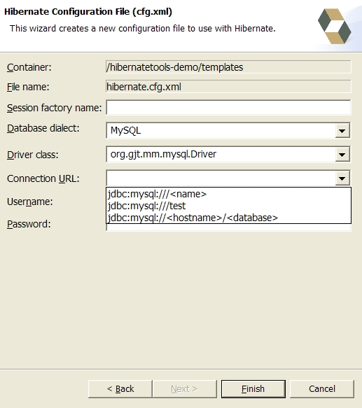
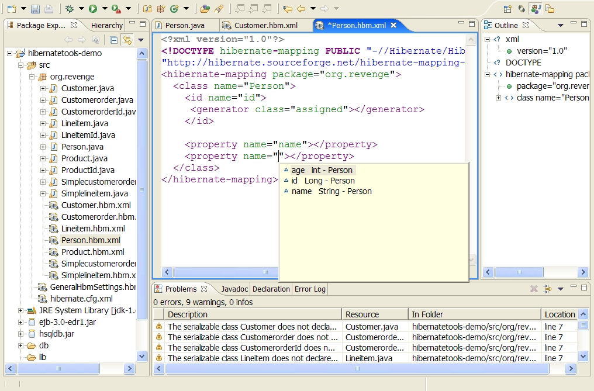
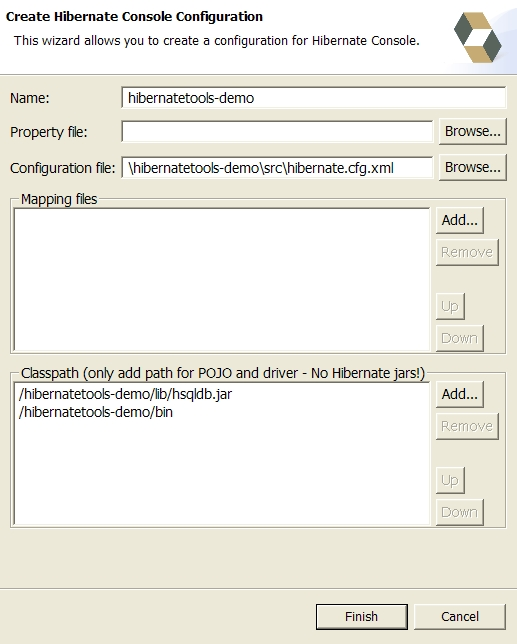
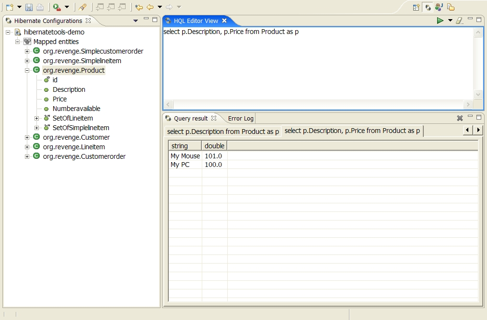

Please note that this release is an alpha release and as such is
provided for allowing users to see what has been done on the Hibernate
Tools for Hibernate 3. This release primarily focus on showing the
eclipse plugins and its integration with the reverse engineering and
code generation. The code and reverse engineering will also be made
available as Ant tasks to allow running them standalone and as part of a build.
See the Hibernate
Tools Road Map for info about where the tools are heading.
This release contains a set of Eclipse plugins that provides the following functionality:
Please note that these tools does not try to hide any functionality of Hibernate. It's goal is to ease some of the tasks that is connected with using a ORM such as Hibernate. Users are still encourage/required to read the documentation for Hibernate to fully utilize Hibernate and it's tools.
To be able to reverse engineer, prototype queries and of course to simply use Hibernate a hibernate.properties or hibernate.cfg.xml file is needed. Hibernate Tools provide a wizard for generating the hibernate.cfg.xml.
The wizard can be started by clicking "New Wizard" (Ctrl+N), selecting the Hibernate/Hibernate Configuration file (cfg.xml) wizard and press "Next". After starting the wizard and you have selected a location for the hibernate.cfg.xml you will see the following page:

On this page you enter the information that is placed in the
hibernate.cfg.xml. Details about these can be found in Hibernate
reference documentation.
Pressing Finish will generate the hibernate.cfg.xml and the file is opened up in a editor.
Tip: The contents in the comboboxes for Driver class changes dependent on which Dialect you have chosen. The same is done for Connection URL dependent on the chosen Driver.
The hbm.xml editor provides basic XML editing functionallity, and
furthermore provides package, class and field completion for
relevant attributes. The completion notices it's context and limits the completion for e.g.
<property> and only shows the properties/fields available in the
enclosing <class>, <subclass> etc.

Figure 1: Context dependent code completion dependent in the hbm.xml editor
The Hibernate Console Perspective combines a set of views which allows you to see the structure of your mapped entities/classes, edit HQL queries, execute them and see their result. To use this perspective you need to create a console configuration.
A console configuration provides enough data for Hibernate Console to create a Hibernate Configuration object from which a session factory can be built.
You create a console configuration by running the Console Configuration wizard which is shown in the following figure:

Eeach parameter is described in the following table. The
"Detected default" column is the values the Wizard will automatically
detect if started when a resource from a Java Project is
selected.
| Parameter | Description | Detected default |
|---|---|---|
| Name | The unique name of the configuraiton | Name of the Java project |
| Property file | Path to a property file which is used to create the configuration | First hibernate.properties file found in the project |
| Configuration file | Path to a hibernate.cfg.xml which is used to create the configuration | First hibernate.cfg.xml found in the project |
| Mapping files | List of additional mapping files that should be loaded in the configuration. Note: hibernate.cfg.xml can also contain mappings. | All hbm.xml files found in the project |
| Classpath | The classpath for loading POJO and JDBC drivers. Do not add Hibernate related .jars here since it will conflict with the Hibernate libraries used inside Hibernate Console. This also include any .jars Hibernate is dependent on, such as cglib, commons-logging etc. | The default build output directory and any .jars that contains a class that implements java.sql.Driver |
When you press "Finish" on the wizard a Console configuration will be created and is visible in the Hibernate Configurations View.
To start viewing the entity/class structure you right click the
configuration and select "Create SessionFactory". This will create a
standard Hibernate SessionFactory based on the parameters given in the
console configuration.
When this have been created a small + should appear next to the named
console configuration. Clicking on this will allow you to browse the
class/entity structure.
If an error occur it is probably because of an error in the console configuration. This will be shown in a message dialog and if that does not contain enough informationm details about the error and its exception can be seen in the Error Log view.
Queries can be executed in two ways: by double clicking on entity names in the tree or by entering HQL in the HQL editor and pressing the green execute button.
Result of queries will be shown in the Query results view and details of possible errors (syntax errors, db errors etc.) is also here to be found in the Error Log view.
Tip: currently the queries will be executed with list() and without any limit of the size of the output. Thus be careful about executing queries that return a large result. Future releases will allow for limiting the result and iterate through the result instead.
Hibernate Tools 3.0alpha provides a simple "click-and-generate" reverse engineering and code generation facility. The reverse engineering works by creating a Hibernate Configuration object (Hibernates internal meta model). On this meta-model a set of (velocity) templates is applied which generates a set of artifacts. In this release we have POJO's, hbm.xml's and hibernate.cfg.xml generation. To start this you choose the "Hibernate Artifact Generation Wizard".
First you need to select which Console configuration will be used and in which directory you want the generated code to reside. Note: all generation will generate files, and overwrite possibly existing files in this location.
Following you have a range of options which are explained in the following.
When reverse engineering is selected Hibernate Tools will connect to your database and use JDBC metadata to build up a Hibernate Configuration.
The basic rules for the conversion is that each Table/View found is mapped to a Class, and each column is mapped to a Property. The package name controls the "root" of the generated classes.
For each found foreign key, a <many-to-one> and a corresponding <one-to-many> in a Set is created.
The flag "Generate 'raw' composite ids" decides how primary keys with multiple keys are handled. There is always created a <composite-id>, and if there are matching foreign-keys a <key-many-to-one> will be created. Except if you choose to active the 'raw' composite ids, then it is just treated as a 'raw' scalar value (string,long,etc.) instead of a reference to an entity. Note: a <many-to-one> property is still created, but is simply marked as non-updatable and non-insertable.
The code generation will generate all the persistent classes and components found in the Hibernate Configuration.
It is not a requirement to activate reverse engineering to use the Java code generation. You can use the code generation on your own handwritten or in other ways generated hbm.xml files.
This option will activate any generation of EJB3 sections in the javaclass.vm template. In this release the generation are very simple and incomplete. We included this option as we expect to send out an update of the javaclass.vm template which completes most of this generation. Additionally users can write (and hopefully contribute) templates that adds more support for EJB3.
The Java code generation is basically a complete rewrite of the hbm2java found in HibernateExt-2.1.3. This means that featurewise they should be very much equal, but there might be some exotic <meta> features that is not fully implemented yet. If you find such issues are or just issues in general we are very much interested in hearing about these so they can be fixed in a later release.
You can read about the <meta> tag feature in the existing hbm2java documentation
This basically dumps a hbm.xml per defined class in the configuration. This also goes for inheriance mappings. Each <subclass> or <joined-subclass> will be placed in a single file with an extends attribute for their superclass.
The generation support all the needed features for utilizing the reverse engineering functionallity. Still, not all major constructs are supported, and some aspects of the hbm.xml is not fully generated yet. We plan to complete this in future releases.
This option writes a hibernate.cfg.xml with all hibernate relevant properties and with a <mapping> reference to each persistent class. This reference will follow the same pattern as hibernate mapping file generation - one reference per class.
All the code generated are controlled by templates (except the hibernate.cfg.xml in this release). These templates are per default looked up in the classpath of the Hibernate Console Plugin.
If something is not generated as you want, or you want something completly different you can write your own templates and have them used instead. You do this by placing your own .vm files in a directory, and tell the Artifact Generation Wizard to use custom templates and from which directory to look up.
There exist a pre-defined set of templates, and to overwrite these you need to use the same file names. The pre-defined templates can be found in the hibernate-tools.jar found in the org.hibernate.eclipse directory.
The template names are for the hbm.xml files generation named after which section of the hbm.xml they generate for. Remember, you don't need to have all templates in your custom directory - only for those sections you want to change something.
The template name for java generation are javaclass.vm. In the future this will possibly also be divided into separate parts.
All the templates has a predefined set of variables and properties available. The following table describe these.
| Name | Contents | Availability |
|---|---|---|
| $cfg | The current Hibernate Configuration object. See Hibernate3 javadocs for available properties/methods. | Anywhere |
| $c2h | A Cfg2HbmTool. Contains a set of helper methods related to cfg to hbm conversion. See sourcecode and existing templates for available properties/methods. | Anywhere |
| $c2j | A Cfg2JavaTool. Contains a set of helper methods related to cfg to java conversion. See sourcecode and existing templates for available properties/methods. | Anywhere |
| $clazz | A reference to the current PersistentClass or Component being processed. | In any class related template |
| $property | A reference to the current Property being processed | In any property related template |
Notice that some of these properties are only available in a certain context (e.g. $property is not available at the Class level, but only when dealing with properties), but if you need to look up some information you have full access to Hibernate's own meta-model the Configuration via $cfg. This combined with the power of velocity templates should give you virtually unlimited flexibility and possibilities regarding the generation.
Please use it wisely!
Enjoy the Hibernate Tools 3.0alpha - The Hibernate Team